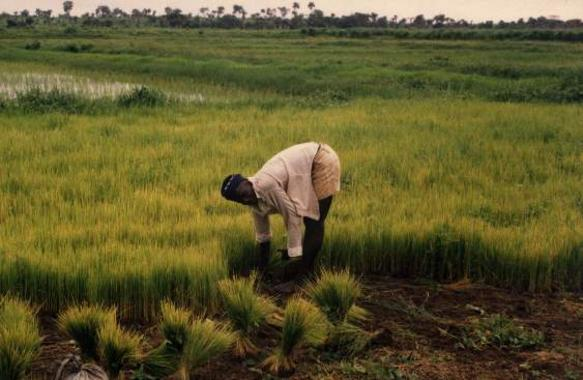

Helping Farmers Grow Better, Sell Faster, and Reach Real Customers.
SaloneFarm Connect is a presentation-ready static website that supports farmers with crop advice, market access, customer orders, profile management, and a unique farmer product dashboard.

Built for farmers, buyers, and presentation flow.
The website focuses on advisory support, marketplace access, farmer product uploads, and customer orders without separate Problem or Solution pages.
Advisory
Crop advice, district suggestions, pest alerts, and weather tips.
02Market
Customer marketplace with products published by farmers.
03Farmer Dashboard
Farmers upload products and manage their own previous product table.
04Order Cart
Customers add products to cart and submit a static checkout request.

Farmers publish products. Customers add them to cart.
Registered farmers can upload produce in their dashboard. Each farmer sees only their own previous products, while published items appear in the public marketplace for customers.
- Farmer-specific product table
- Customer order cart
- Profile page with registration details
- Local image folder and actual logo